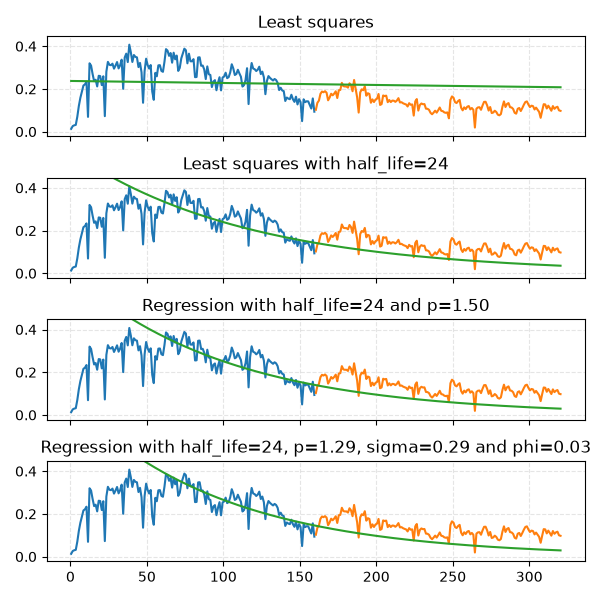

Note
Go to the end to download the full example code.
Increasing model complexity
“Least squares” is a special case of
“Weighted least squares”, which is a special case of
“Weighted p-norm regression”, which is a special case of
“Weighted AR(1) regression with errors from a generalized normal distribution”

import matplotlib.pyplot as plt
import numpy as np
import pandas as pd
from dca.adca.well import Well
from dca.datasets import load_monthly_sodir_production
# "GULLFAKS SØR", "GYDA", "HEIDRUN", "NORNE", "STATFJORD"
FIELD = "GULLFAKS SØR"
SPLIT = 0.5
half_life = 24
p = 1.5
LOGSPACE = False
# Read data from a public source (SODIR - sokkeldirektoratet)
df = (
load_monthly_sodir_production()
.loc[lambda df: df.prfInformationCarrier == FIELD, :]
.rename(
columns={
"prfInformationCarrier": "field",
"prfYear": "year",
"prfMonth": "month",
"prfPrdOilNetMillSm3": "production",
}
)
.assign(day=1)
.assign(
time=lambda df: pd.to_datetime(df[["year", "month", "day"]]).dt.to_period(
freq="M"
)
)
.loc[lambda df: df.production > 0]
)
# Create a well
well = Well(
production=df.production.to_numpy(),
time=df.time,
id=FIELD,
preprocessing="producing_time",
curve_model="arps",
)
def plot_data(ax, well, q=0.5):
"""Small utility function for plotting. Uses some global variables."""
if LOGSPACE:
preds = np.log(well.predict(x, time_on=w, q=q))
ax.plot(x_train, np.log(y_train))
ax.plot(x_test, np.log(y_test))
ax.plot(x, preds)
else:
preds = well.predict(x, time_on=w, q=q)
ax.plot(x_train, y_train)
ax.plot(x_test, y_test)
ax.plot(x, preds)
fig, axes = plt.subplots(figsize=(6, 6), nrows=4, ncols=1, sharex=True, sharey=True)
axes_iter = iter(axes.ravel())
# ================= Fit least squares model =================
well = well.fit(half_life=None, p=2, sigma=1, phi=0, prior_strength=0.0, split=SPLIT)
ax = next(axes_iter)
ax.set_title("Least squares")
(x_train, y_train, w_train), (x_test, y_test, w_test) = well.get_train_test(split=SPLIT)
(x, y, w) = well.get_curve_data()
plot_data(ax, well, q=0.5)
# ================= Fit least squares model with half-life =================
well = well.fit(
half_life=half_life, p=2, sigma=1, phi=0, prior_strength=0.0, split=SPLIT
)
ax = next(axes_iter)
ax.set_title(f"Least squares with {half_life=}")
plot_data(ax, well, q=0.5)
# ================= Fit p-norm model with half-life =================
well = well.fit(
half_life=half_life, p=p, sigma=1, phi=0, prior_strength=0.0, split=SPLIT
)
ax = next(axes_iter)
ax.set_title(f"Regression with {half_life=} and {p=:.2f}")
plot_data(ax, well, q=0.5)
# ================= Fit full AR(1) regression model =================
well = well.fit(
half_life=half_life, p=None, sigma=None, phi=None, prior_strength=1e-2, split=SPLIT
)
# All these parameters are now inferred
p = well.parameters_["p"]
sigma = well.parameters_["sigma"]
phi = well.parameters_["phi"]
ax = next(axes_iter)
ax.set_title(f"Regression with {half_life=}, {p=:.2f}, {sigma=:.2f} and {phi=:.2f}")
plot_data(ax, well, q=None)
# Common formatting of axes
for ax in axes.ravel():
max_y = 1.1 * (np.max(np.log(y)) if LOGSPACE else np.max(y))
ax.set_ylim([ax.get_ylim()[0], max_y])
ax.grid(True, ls="--", alpha=0.33)
fig.tight_layout()
plt.show()
Total running time of the script: (0 minutes 1.197 seconds)